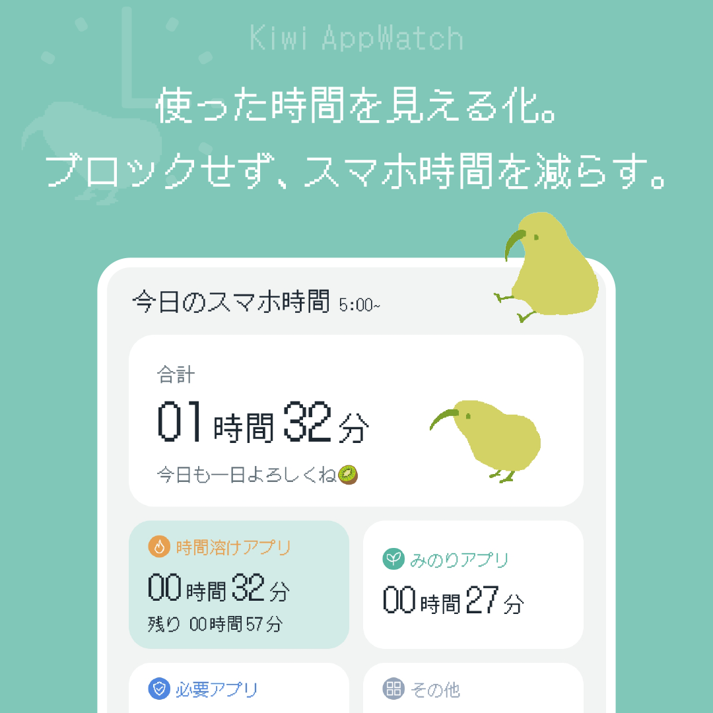

Welcome to dokey page
毎日を、ちょっと心地よく。
暮らしを少し便利にするアプリを、個人で開発しています。
Apps
つくっているアプリ

Android アプリ
プライバシーポリシー →
Kiwi AppWatch
つい増えてしまうスマホ時間を、
キーウィと楽しく整える。
スマートフォンやアプリの使用時間を見える化し、自分の時間の使い方を振り返るためのAndroidアプリです。
Kiwi AppWatchについて →プライバシーポリシー →
お問い合わせ
アプリに関するお問い合わせはこちらから。
support@dokeypage.com